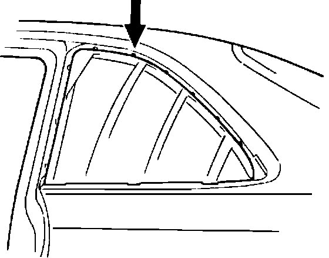
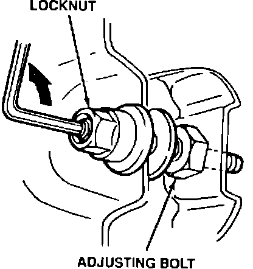
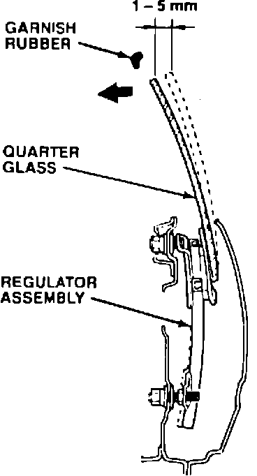
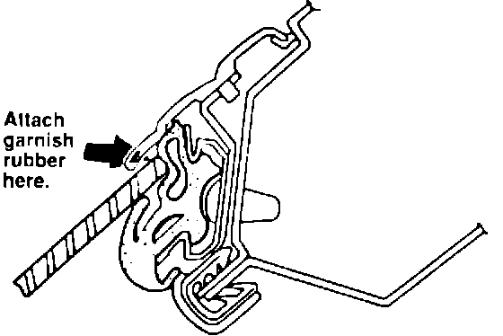

Rear Quarter Window - Damaged Garnish Rubber
91acura05
September 30, 1991
BULLETIN NO.
91-044
YEAR MOOEL VIN APPLICATION
1991 LEGEND COUPE ALL
Replacement Of Rear Quarter Window Garnish Rubber
SYMPTOM
Damaged rubber on the quarter window garnish.
PROBABLE CAUSE

The window glass does not clear the quarter window garnish rubber.
CORRECTIVE ACTION
1. Remove the rear seat back, seat cushion and the quarter trim panel. Refer to section 20 of the Legend Coupe Service Manual, page 20-16, for detailed instructions.
2. Lift the lower edge of the vinyl seal to access the bottom regulator's adjuster.

3. Loosen the locknut. Turn the adjusting bolt counterclockwise while raising and lowering the glass.

4. Adjust the top of the glass to just clear the garnish rubber.

5. If the garnish rubber is loose, reattach it to the garnish with super-glue.
6. If the garnish rubber is deformed, remove it and the run channel from the body. Use 3M General Purpose Adhesive Cleaner (P/N 08984) to clean the garnish rubber attachment surface.
7. Install the replacement garnish rubber listed under PARTS INFORMATION. Add a liftle super-glue to the self adhesive. Make sure it doesn't get on the exposed surfaces of the garnish rubber.
8. Reinstall the run channel.
9. Check the clearance of the other quarter glass garnish rubber and adjust or repair as necessary.
10. Reinstall the vinyl seal, the trim panel, and the rear seat.
PARTS INFORMATION
Rubber, garnish P/N 73820-SP1-999
WARRANTY CLAIM INFORMATION
In warranty: The normal warranty applies.
Out-of-warranty: Any repair performed after warranty expiration may be eligible for goodwill consideration by the District Service Manager. You must request consideration, and get the DSM's decision, before starting work.
Operation number: 829133 - left side
830133 - right side
Flat rate time 0.7 (each side)
Failed P/N: 73820-SP1-013
Defect code: 004
Contention code: B99